Check GrimUI now! - one of the most powerful UIs.
GrimUI - Bedrock addons postHome
StarLib - Library to help you create a JsonUI forms. Supports multi-forming, dynamic structure, custom tabs, styles and much more!
Source code
Download latest release of StarLib.
Contributors
DynamicUI example
Hello! Now I want to show a small example of a dynamic UI made with StarLibV2 using the example of NutUI
You can download this example here.
DownloadGetting started with creating screen.
server_form.json
Loading...
As you can see, we using StarLib's dynamic header "starlib_pkg_dynamic_common.common_dynamic_header". Dynamic header allows you to move the titleline away from the button, as well as add additional buttons using $DYNAMIC_HEADER_header_contents_control, but in this ui I decided not to add them.
Now let's add out custom style elements to make form looking good.
server_form.json
Loading...
Now the scary part! Dynamic button.
What is dynamic?
A dynamic UI means that the shape, location, and size of the buttons depend on the tags inserted into the button text. this allows you to make countless variations. GrimUI uses the same method
Explanations of the method used in the code below
Almost all dynamic forms use the padding-based sizer & no_height structure scheme. Why? Because it provides the best optimization. And it is this structure that is used in StarLibV2!
I created a diagram to show how it works
A button is a finite element. that is, the output. Async vertical size controls the vertical size of the button, but when using the no_height tag, it turns off to turn off the collision of the button as well. Disabling the button collision, that is, no_height, allows you to make several buttons in one line, while being in the same stack panel.
This is how padding-based sizing works
Did you get it? Padding pushes the main button to the side
And now, with knowledge of the structure of the dynamic button, we move on to the code!
server_form.json
Loading...
This is all! With just understanding dynamic structure, you can create dynamic forms with StarLibV2 so fast!

Multiform UI example
Hello! Now I want to show a small example of a multiform UI made with StarLibV2.
Default form

Custom form
You can download this example here.
DownloadLets's start with screen template
server_form.json
Loading...
Now we need to change the content
Because in our forms, only the content changes, so I only change the $content_control. But in case your forms change completely, you can use $forms_holder_controls
server_form.json
Loading...
And finally. Custom button
I'll use the cubic_button template from StarLibV2 as a basis.
server_form.json
Loading...
Done
global.json
global.json file created to quickly obtain the simplest and most used elements. As you can see, it doesn't have a long name.
@global.binding
The binding for form_button_text. If $key is in form_button_text, the element is visible.
| Index | Default value | Description | Type |
|---|---|---|---|
| $key | "" | Binding key | string |
@global.reverse_binding
The binding for form_button_text. If $key is NOT in form_button_text, the element is visible.
| Index | Default value | Description | Type |
|---|---|---|---|
| $key | "" | Reverse binding key | string |
@global.range_selection_binding
The binding for form_button_text. The element is visible only if text between "from" to "to" is not empty.
Important!
range_selection_binding uses \t as a space in the text. That is, it takes it into account in the size of the field, but in the final version it removes it.
| Index | Default value | Description | Type |
|---|---|---|---|
| $from | "" | Specifies from which point the text selection field starts. | float |
| $to | "" | Specifies the point to which the text selection field will go. | float |
@global.scrolling_panel
Just a scrolling panel template. All the variables from the original scrolling_panel remain.
@global.empty_panel
Just an empty panel. It is recommended to use this panel, because here the size is [0, 0], unlike common.empty_panel, where there is no size and errors may occur.
@global.button_factory
Button factory template. Default orientation - vertical.
| Index | Default value | Description | Type |
|---|---|---|---|
| $factory_item | global.empty_panel | Factory control name. | string |
@global.grid
Just a grid template.
| Index | Default value | Description | Type |
|---|---|---|---|
| $grid_item | global.empty_panel | Grid item template. | string |
style.json
style.json is used for quick access to image and text elements, as well as assets for starLib.
@style.label
Label template.
| Index | Default value | Description | Type |
|---|---|---|---|
| size | [100%, default] | Size. | array |
@style.image
Image template.
screen_template.json
screen_template.json is used for screen templates.
@starlib_pkg_screen_template.screen
Starlib advanced screen template.
| Index | Default value | Description | Type |
|---|---|---|---|
| $SCREEN_TEMPLATE_fade_control | style.fade | Element to be used as fade. | string |
| $SCREEN_TEMPLATE_frame_control | style.white_frame | Element to be used as a frame. | string |
| $fade_enabled | false | Screen background fade. | boolean |
| $frame_enabled | false | Form frame. | boolean |
| $forms_holder_controls | [ { @starlib_pkg_screen_template.form_template } ] | Control of the forms used. It is usually used for multiforms. | array |
@starlib_pkg_screen_template.form_template
Starlib advanced form template. Used by default in starlib_pkg_screen_template.screen
| Index | Default value | Description | Type |
|---|---|---|---|
| $SCREEN_TEMPLATE_header_control | starlib_pkg_screen_template.header_template | Element to be used as header. | string |
| $SCREEN_TEMPLATE_content_control | starlib_pkg_screen_template.content_template | Element to be used as form content. | string |
| $SCREEN_TEMPLATE_sub_content_control | global.empty_panel | Element to be used as form subcontent. | string |
| $SCREEN_TEMPLATE_background | style.black_alpha | Element to be used as form content background. | string |
| $SCREEN_TEMPLATE_between_contents_padding_control | global.empty_panel | Element to be used as padding between header and form content. | string |
| $SCREEN_TEMPLATE_between_contents_padding_size | [ 0, 0 ] | Size of the between contents padding. | array |
| $SCREEN_TEMPLATE_content_size | [ 100% - 8px, 100% - 8px ] | Size of the form content panel. | array |
@starlib_pkg_screen_template.header_template
Classic header template.
| Index | Default value | Description | Type |
|---|---|---|---|
| $HEADER_TEMPLATE_size | [ 100%, 24 ] | Header panel size. | array |
| $HEADER_TEMPLATE_style_control | style.black | Header style control. | string |
| $HEADER_TEMPLATE_title_control | starlib_pkg_screen_common.title_template | Title element control. | string |
| $HEADER_TEMPLATE_close_button_control | starlib_pkg_screen_template.close_button | Close button element control. | string |
@starlib_pkg_screen_template.close_button
Close button for classic header. Uses @starlib_pkg_screen_common.close_button_template